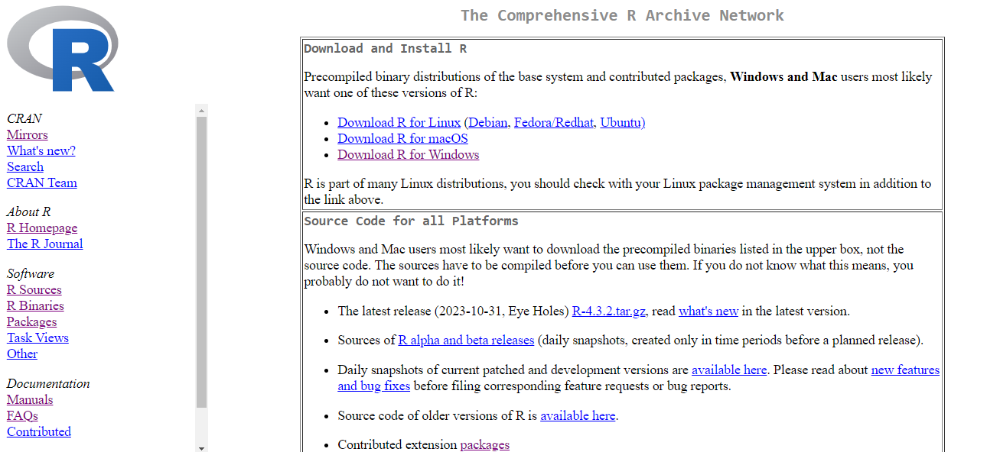
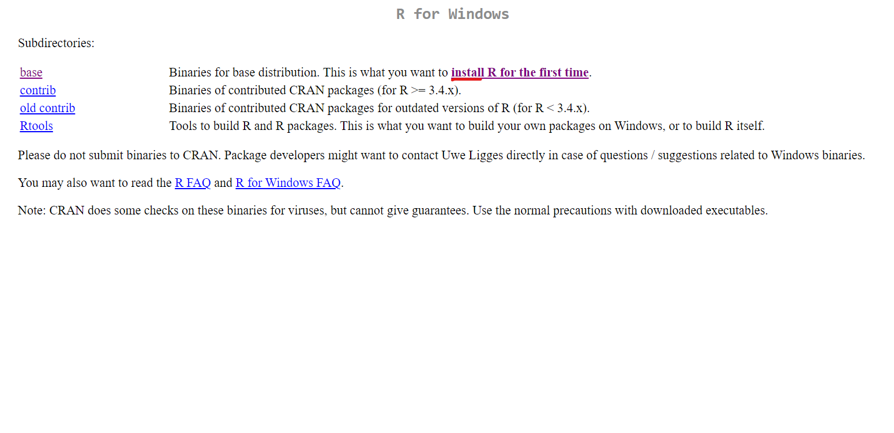
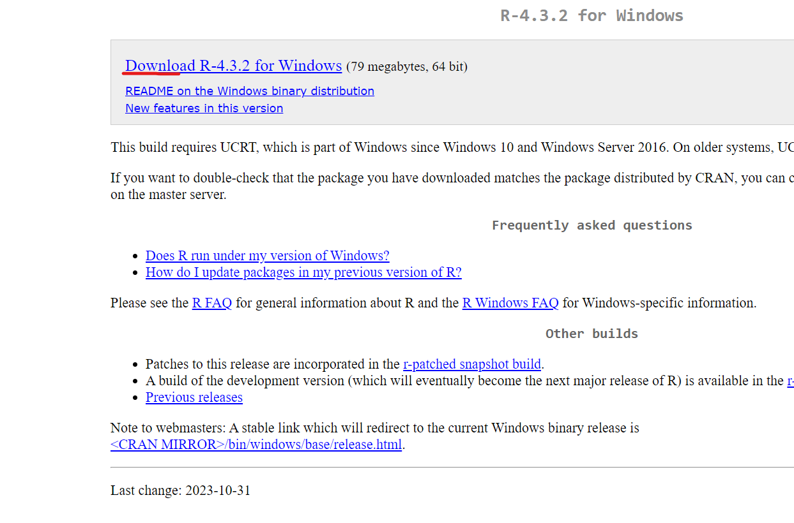
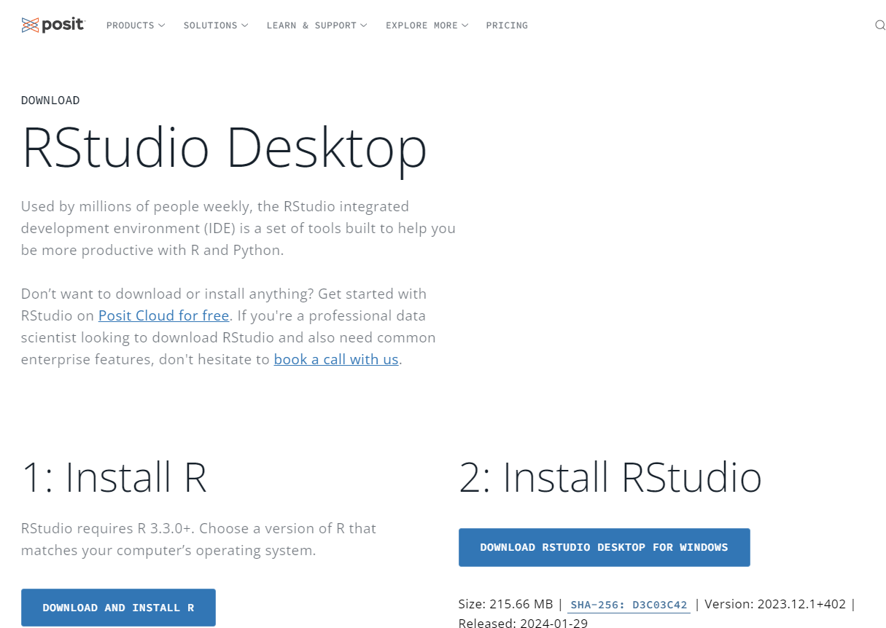
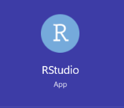

Hola a todxs, en esta unidad aprenderemos a usar R, el cual es un lenguaje de programación ampliamente usado para manipulación, análisis y visualización de datos.
El lenguaje de programación R ha adquirido una importancia significativa en el ámbito de la estadística y la ciencia de datos. Su popularidad se debe a diversas características que lo hacen especialmente adecuado para el análisis y la visualización de datos. Algunas características ventajosas de R son:
R brinda a los usuarios una herramienta potente y especializada para realizar una gran cantidad de análisis.
Para instalar R visitaremos la Página de CRAN En este lugar encontraremos la documentación de R y diferentes descargas dependiendo el sistema operativo.

Posteriormente elegiremos nuestro sistema operativo y haremos click en la opción install R for the first time

Haremos Click en la opción Download R

Seguiremos cada paso hasta que se instale y se cree un acceso directo en nuestra computadora.
Para Instalar RStudio visitaremos la página RStudio Desktop. Instalaremos en el ícono de installar RStudio (Paso 2:)

La descarga comenzará y tendremos que seguir los pasos que el ejecutable nos indique. No se preocupen por sus equipos, es segura la descarga. Al final de la descarga tendremos un ícono como éste en nuestra computadora:
